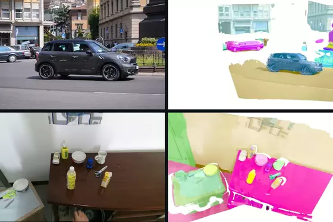

S4VY: Segment Anything in Feed-Forward 4D Visual Geometry
Abstract: We present S4VY, a Segment Anything model that establishes object identities through shared 4D visual geometry instead of propagating 2D masks along ordered frames: i) Feed-forward Segment Anything in 4D: persistent object queries turn shared visual-geometric features into exhaustive class-agnostic 4D instances, each keeping one identity across all observations, and any of them can be selected by point or box prompts, ii) Agentic language grounding: a dual-stream grounder, active tree search and a comparative critic locate natural-language targets across large dynamic observation sets.